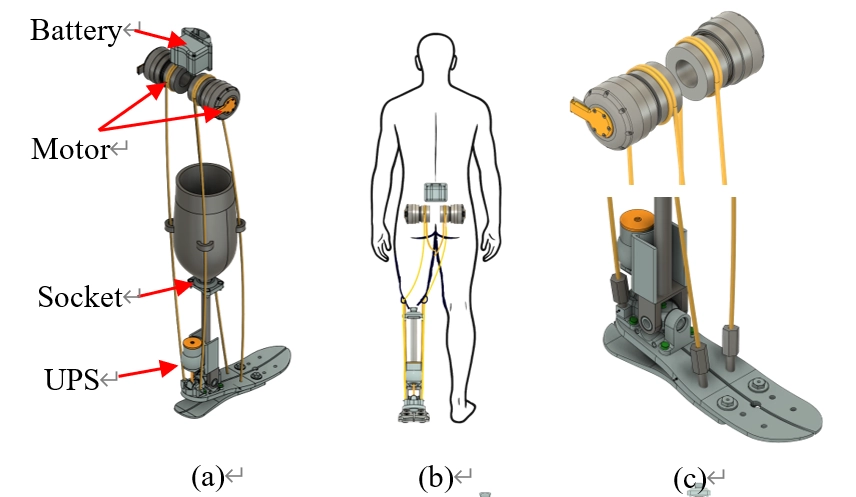
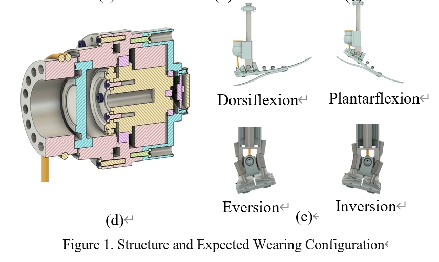
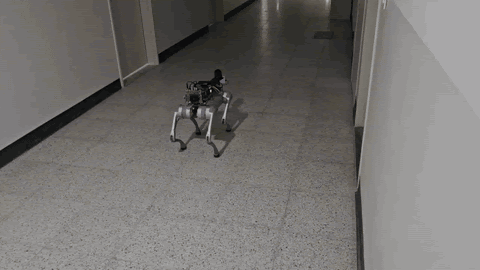
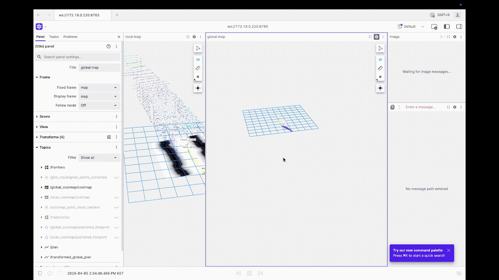

Research › Undergraduate Research
Undergraduate Research
Undergraduate research at Sejong University (Advisor: Prof. Hyunsoo Woo)
Projects
Cable-Driven 2-DOF Ankle Prosthesis
2025.01 – Present


Designed a 2-DOF ankle prosthesis that moves the motors and battery to the waist and drives the ankle through cables, reducing the mass on the leg to 0.803 kg. The design combines a unidirectional parallel elastic actuator (UPEA) with the cable drive, and its estimated metabolic cost is lower than linkage-based and previous cable-driven designs. A 1-DOF testbed with a load cell is being built to measure cable transmission loss.
모터와 배터리를 허리로 옮기고 케이블로 발목을 구동하는 2자유도 발목 의족을 설계하는 연구입니다. 다리 쪽 질량을 0.803 kg으로 줄였으며, 단방향 병렬 탄성 구동기(UPEA)를 결합하여 기존 링크형·케이블형 의족보다 낮은 대사 비용을 예측하였습니다. 현재 로드셀을 장착한 1자유도 테스트베드를 제작하여 케이블 전달 손실을 측정할 예정입니다.
ICROS 2025 · Undergraduate Paper Award
ICCAS 2025
IFAC World Congress 2026
3-DOF End-Effector Upper-Limb Rehabilitation Robot
2025.09 – Present
Developed an end-effector rehabilitation robot from mechanical design to system integration: workspace and link design, motor and harmonic-drive selection, lightweight I-beam links, and a compact drive module. Integrated the system on a Xenomai RTOS PC with CAN communication and formulated a cascade admittance-impedance controller with a spatial tilt-angle limit.
뇌졸중 환자의 상지 재활 훈련을 위한 3자유도 엔드이펙터형 재활로봇을 개발하는 연구입니다. 작업 공간과 링크 설계, 모터·하모닉 드라이브 선정, 경량 I-빔 링크와 구동 모듈 설계를 수행하였습니다. 이후 Xenomai RTOS PC와 CAN 통신으로 시스템을 통합하고, 공간 기울기 각도 제한을 포함한 어드미턴스-임피던스 캐스케이드 제어 구조를 설계하였습니다.
ICNR 2026
ICCAS 2026
LiDAR SLAM and Navigation for a Quadruped Robot
2025.09 – Present


Built the navigation stack on a Unitree Go2 with a Hesai LiDAR: GLIM SLAM mapping, an OctoMap 3D obstacle map, and Nav2 path planning. Follow-up research showed that the z-axis drift comes from a tilted map frame and proposed a correction based on estimating that tilt.
사족보행 로봇이 LiDAR 기반으로 지도를 만들고 스스로 주행하도록 하는 연구입니다. Unitree Go2와 Hesai LiDAR JT128로 GLIM SLAM 지도 작성, OctoMap 3D 장애물 지도, Nav2 경로 계획을 구성하였습니다. 후속 연구에서 z축 오차가 지도 좌표계의 기울기에서 비롯됨을 밝히고, 기울기 추정 기반 보정 방법을 제안하였습니다.
KSME 2026
PORTY: Autonomous Port Security Patrol Robot
2025.06 – 2025.12 · Team project (4 members)
Handled sensor integration (Arduino, Jetson Orin Nano), drive-unit design, and LiDAR SLAM with Nav2 for an outdoor patrol robot that detects intruders, fire, toxic gas, and road cracks.
항만에서 침입자, 화재, 유독가스, 도로 균열을 감지하는 실외 순찰 로봇을 개발하는 4인 팀 프로젝트입니다. 센서 통합(Arduino, Jetson Orin Nano), 구동부 설계, LiDAR SLAM과 Nav2 자율주행을 담당하였습니다.
Encouragement Award (KMA Chairman's Award)
Smart Maritime Logistics × ICT Mentoring
ACK 2025